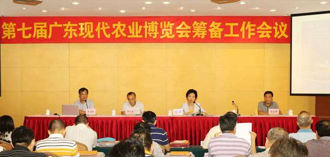

15日，第七届广东现代农业博览会新闻发布会在广州召开。据介绍，由广东省农业厅主办的第七届农博会将于11月25日至28日在广州琶洲广交会展馆举行。
据了解，本届农博会紧扣“创新让生活更幸福”的主题，以“展示最新成果、助推产业升级”为办展宗旨，以“农业精品展示、农业交流合作、农业贸易洽谈”为主要内容，努力打造符合“市场化、专业化、国际化、品牌化、信息化”要求的高水平农业盛会和贸易交流平台。
本届农博会的展出面积达2万平方米，展位有952个，参展企业近800家，3000多种优质农产品将集中亮相。展览总体布局将分为省综合展示区、省内展区、外省及粤台农业合作展区。
据悉，农业科技将首次以科技联盟的形式参展，体现创新驱动。此外，本届农博会还将重点展现区域特色、行业特色、地标特色及服务特色，将农业智能化的转型趋势和“互联网＋农业”的广阔前景全面呈现。
高精尖农业科技成果和凸显岭南风韵的大型农产品创意造型也将亮相本届农博会。除此之外，基于互联网平台的现代农业新产品、新模式诸如农业互联网金融和农产品电商等也将在博览会上带给参观者不一样的体验。
作为农产品贸易、消费大省，广东积极举办现代农业博览会，将以开放、包容的姿态为各地区农业企业提供一个洽谈交易的平台，促进地区间农业交流发展。（魏肖萌）